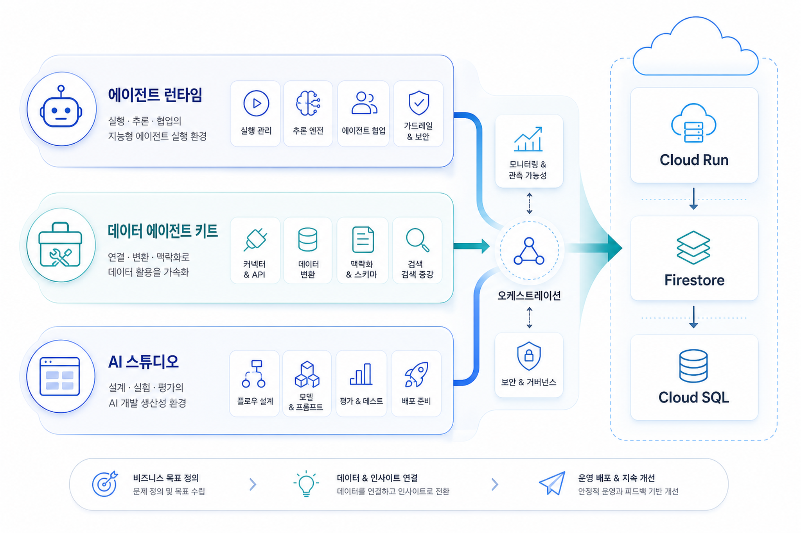
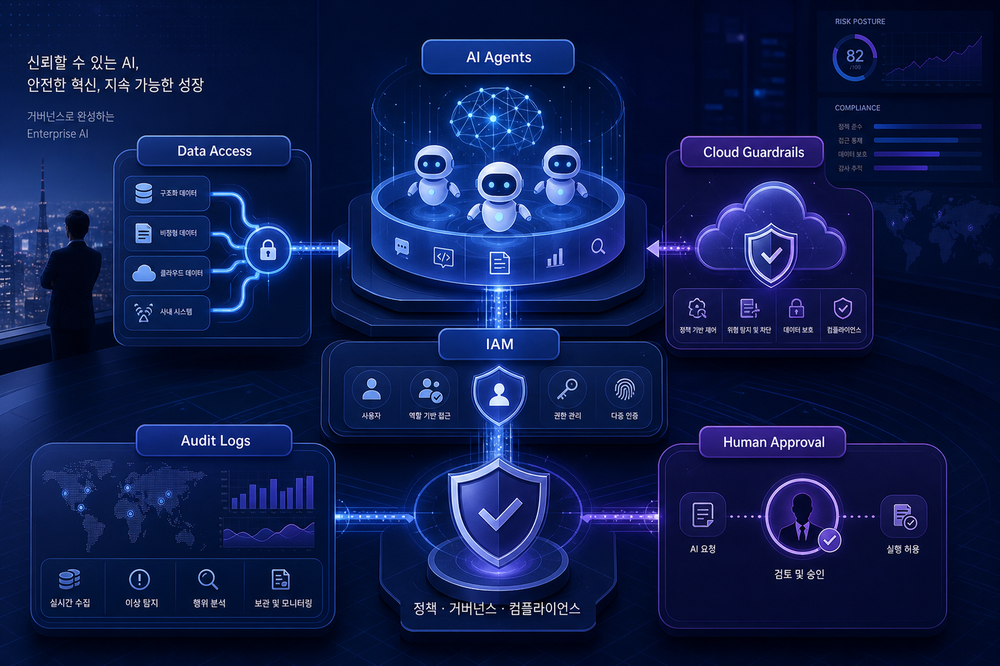

One-line thesis
핵심 트렌드 분석
1. Agent runtime의 표준화
Agent Executor는 장기 실행 에이전트의 중단·재개·분산 실행을 애플리케이션 코드 밖의 운영 표준으로 끌어낸다. 기업 입장에서는 “에이전트가 답을 잘하는가”보다 “실패 후 어디서 재개하고 누가 승인했는가”가 더 중요한 평가 축이 된다.
2. Data tools의 에이전트화
Data Agent Kit은 BigQuery, Looker, Spanner, AlloyDB 같은 데이터 접점을 IDE/CLI와 에이전트 실행 환경으로 가져온다. 데이터 플랫폼은 더 이상 분석가 화면에만 머물지 않고, 에이전트의 context·memory·personalization 계층이 된다.
3. Prototype-to-deploy 경로 단축
AI Studio, Cloud Run, Firestore, Firebase Auth, Cloud SQL 통합은 현업이 앱을 빠르게 만들고 배포하는 경로를 낮춘다. 이는 생산성 기회이지만 동시에 shadow AI, 데이터 접근, 앱 보안 표준화를 더 빨리 요구한다.
기술 변화의 의미
Google Cloud의 메시지는 모델, 개발도구, 데이터 계층, 배포 런타임을 하나의 엔터프라이즈 에이전트 운영면으로 묶는 방향이다. 한국 기업은 이를 단순 신기능 목록이 아니라 AI 개발 생산성 + 데이터 접근 통제 + 운영감사의 통합 과제로 봐야 한다.
- 모델 선택보다 runtime resiliency와 운영 로그가 중요해진다.
- 데이터 카탈로그/권한/스키마 맥락이 에이전트 품질을 좌우한다.
- 현업 개발 속도가 올라갈수록 IAM, 승인, 배포 정책을 자동화해야 한다.

기업 적용 관점: 어디부터 시작할 것인가
| 영역 | 기회 | 도입 전 확인 | 추천 첫 PoC |
|---|---|---|---|
| Agent Runtime | 장기 실행 업무 자동화, 중단 후 재개, human-in-the-loop | 감사로그, 승인 워크플로우, 장애 복구 기준 | 사내 질의응답보다 결재/검토가 포함된 저위험 프로세스 |
| Data Agent Kit | 데이터 탐색·분석·코드 작성의 에이전트 보조 | 데이터 권한, masking, lineage, 쿼리 비용 상한 | BigQuery/Looker 기반 운영 리포트 생성 보조 |
| AI Studio + DB | 현업 앱 prototype-to-deploy 속도 향상 | 앱 보안, 인증, 배포 표준, 데이터 저장 위치 | Firestore/Cloud SQL 기반 내부 업무 앱 MVP |
| Gemini Enterprise | 조직 단위 에이전트 개발/운영 플랫폼화 | 기존 Workspace/Cloud/IAM 정책과의 통합성 | 부서별 에이전트 템플릿과 운영 대시보드 |
한국 기업 관점 시사점
내부통제와 속도는 같이 설계해야 한다
AI Studio류 도구는 현업 실험 속도를 크게 높인다. 따라서 중앙 IT는 실험을 막기보다 표준 인증, 배포 템플릿, 로그 수집, 비용 한도를 제공하는 플랫폼 역할로 전환해야 한다.
데이터 주권·개인정보·망분리 검토가 선행되어야 한다
에이전트가 기업 데이터에 직접 접근하는 구조에서는 데이터 분류, 접근권한, 프롬프트/응답 로그 보존, cross-border data flow 정책이 초기 설계 항목이 된다.

리스크·거버넌스 체크리스트
- IAM: 에이전트/도구/사용자 권한을 분리하고 최소권한을 적용한다.
- Audit: 어떤 데이터에 접근했고 어떤 도구를 실행했는지 trace를 남긴다.
- Approval: 결재, 외부 전송, 프로덕션 배포에는 human approval gate를 둔다.
- Cost: 모델 호출, 쿼리, 런타임 비용에 상한과 알림을 둔다.
- Evaluation: 정확도뿐 아니라 재현성, 보안 위반, 환각, 정책 준수율을 측정한다.
실행 전략: 30일 로드맵
Week 1 — Use case 선별
업무 가치가 명확하고 데이터 민감도가 낮은 내부 프로세스를 고른다.
Week 2 — Guardrail 설계
권한, 로그, 승인, 비용 한도, 데이터 범위를 먼저 정의한다.
Week 3 — Prototype
AI Studio/Data Agent/Cloud Run/Firestore 또는 BigQuery 기반 MVP를 만든다.
Week 4 — 운영성 평가
장애 재개, 감사 추적, 사용자 피드백, 확장 비용을 기준으로 production 전환 여부를 판단한다.
데이터 부족 및 최신성 주의
사용한 소스
20260521_[Databases]Vibe-coded AI Studio apps with Firestore, Firebase, Cloud SQL.md20260521_[GCP코리아블로그]Innovations from Google IO 26 on Google Cloud.md20260520_[AI&ML]Agent Executor, Google’s distributed Agent Runtime.md20260520_[DataAnalytics]Data Agent Kit brings data skills and tools to your IDE or CLI.md
Appendix — Image Prompt Log
# Image Prompts — GCP Daily Blog 20260525 ## Image Prompt 1 - 목적: Hero / Enterprise AI control plane 분위기 - 삽입 위치: Hero 바로 아래 - image2 prompt: Executive Korean tech blog hero image: Enterprise AI control plane on Google Cloud, Gemini Enterprise agents connected to data cloud, security governance, cloud infrastructure; premium editorial style, clean futuristic boardroom, no logos, Korean business audience, 16:9, no tiny text. - 권장 비율: 16:9 landscape - alt 텍스트: 한국 기업 회의실에서 Enterprise AI control plane과 cloud/data/security 계층을 검토하는 장면 ## Image Prompt 2 - 목적: Agent Runtime / Data Agent Kit / AI Studio 전략 흐름 인포그래픽 - 삽입 위치: 기술 변화의 의미 섹션 - image2 prompt: Korean enterprise infographic style image: three-layer strategy map showing Agent Runtime, Data Agent Kit, and AI Studio to Cloud Run/Firestore/Cloud SQL pathway; elegant abstract diagram, readable minimal Korean labels generated in image, no brand logos, 16:9. - 권장 비율: 16:9 landscape - alt 텍스트: 에이전트 런타임, 데이터 에이전트 키트, AI 스튜디오가 Cloud Run, Firestore, Cloud SQL로 연결되는 전략 지도 ## Image Prompt 3 - 목적: 리스크·거버넌스·IAM·감사로그 강조 - 삽입 위치: 리스크와 거버넌스 섹션 - image2 prompt: Risk and governance visual for Korean CIO/CISO: AI agents, data access, IAM, audit logs, human approval checkpoints, cloud guardrails; sophisticated blue-purple executive illustration, no logos, 16:9, minimal readable labels. - 권장 비율: 16:9 landscape - alt 텍스트: AI 에이전트, 데이터 접근, IAM, 감사 로그, 승인 게이트와 클라우드 가드레일을 표현한 거버넌스 시각화